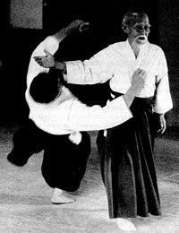

< < < Back
How To Choose A Style Of Martial Art To Study – Return Of Kings
As anybody with functioning eyes can see, the world today sucks: No matter where you stand on the issue of whether or not crime rates are going down or up, the repugnant culture, political and social repression, and all the other petty little frustrations forced upon us by rainbow haired harridans might make you want to start throwing punches and kicks—obviously at a punching bag or a willing sparring partner rather than the SJW woman, as we here at Return of Kings would never advocate violence against our political enemies.
If you’re interested in learning a martial art, now is as good a time as any to start. But the hard decision is: which one to study?
Style Versus Style?
If you’ve researched the subject at all, you’ve probably come to websites like Bullshido, Bloody Elbow, or perhaps even Return of Kings. If this is the case, you’ve probably seen people verbally fellating Muay Thai or Brazilian Jiu-Jitsu, or shitting on Taekwondo, Wing Chun, or Karate.
The typical criticism of the latter is that they are overly ornate and simply “don’t work,” with the implication that the former are instantly effective, turning any practitioner into a killer. Allow me to tell you the most important rule of picking any style of martial art, including Western ones such as boxing or wrestling: the SCHOOL OR GYM is the most important thing, and the quality of instruction therein. Styles of martial arts are not cars that are 100% better or worse performing than others.

What Is Proper Schooling?
Now that I’ve told you that the instruction is much more important than the name of the style, you might now ask “What makes proper schooling?” From my experience, a good martial arts school needs to focus on three things: 1) Physical conditioning-training strength, endurance (both muscular and cardiovascular), and flexibility 2) Proper form and technique—teaching the proper way to punch, kick, throw, breakfall, and anything else that would need to be done, and 3) Competitive, full contact sparring to put the students in a realistic fighting setting, which teaches them the important lessons of operating under adrenaline and withstanding pain as well as using proper technique while in a panic situation.
Simply put, if you’re not sparring, you’re not training. And yes, that goes for the young children as well: I fully endorse young children punching each other in the head (with supervision, of course).

This is why martial arts like SAMBO or Muay Thai have higher reputations than, say, Balinese White Magic, or why Kyokushin Karate and Sanshou Kung Fu (the latter being the style I have trained in, but admittedly have not mastered) are much more successful in full contact MMA competition than other styles in those same families—because their regular curriculum typically centers around physical conditioning, proper technique, and full contact sparring, rather than a focus on forms, kata, taolu, ceremony, and techniques performed on non-resisting opponents.
Unfortunately, many traditional martial arts, especially as performed in the West, focus on those three things. This is why, in an age of mixed martial arts and full contact competition, these styles have, at best, a dubious reputation that is mostly deserved. With that being said, I don’t think that these styles should be thrown into the ashbin of history-trained properly, they can be effective for full contact fighting. To cite one example, Sanshou was invented in the 1920s specifically to be a realistic, combat-effective kung fu style. Conversely, a Muay Thai or BJJ teacher that teaches ineffectively is not going to help you at all, despite the fearsome reputation that these two styles have justifiably cultivated over the years.
How To Judge A School

In addition to their guts, note that this “kung fu” student is wearing a karate gi.
If you want to determine whether or not the nearby school teaches effectively, the best way to do so is to observe: any school worth its salt (and many that aren’t) will allow people to visit and observe the training. Look at how the teacher trains them: if he’s teaching striking, is he teaching them to aim and properly put their whole body weight behind every punch and kick, or is he just allowing them to flail their limbs towards the general vicinity of the target? For that matter, are they punching actual targets such as heavy bags, makiwaras, mu ren zhuangs, etc, or are they just punching the air?
If the martial art is a grappling martial art, is the training done against a resisting, violent opponent, or is it done against a submitting, non-resisting partner? Are they sparring, or are they just line dancing in pairs? Are forms occasionally done, or are they a primary concern of the school?
Do the students look like they’re in good, athletic physical condition, or do they look like pot-bellied LARPers? Bear in mind that this applies to the teachers as well—if the teacher’s out of shape, the students will most likely not be getting a good conditioning regimen.
Judging based on the criteria above will always steer you in the right direction. Once you have established which schools are “serviceable” and which aren’t, you can then decide which school is the best within your price range-look at the pupils they have trained, the background of the instructors, etc. At this point, you must decide on your own.
Fraud And Chicanery
Unfortunately, there is much fraud and general nonsense in the world of martial arts. Most of it can be determined through a light application of common sense…but sadly, common sense is decidedly uncommon. I have already shown you the idiocy that is Balinese White Magic in this post, but I could take you down a veritable rabbit hole of ki blasts, psychic powers, death touches, and poison fists. And sometimes they advise you to smear feces on yourself.
Needless to say, I think well enough of my readers that I feel you won’t fall for this sort of confidence scheme. But the more common scams are much more prosaic—things like charging huge fees for belt testing, requiring students to buy uniforms or anything else from the school, promising a black belt or the equivalent rank in under two years, or making you sign a lease or a contract. These are just a few surefire signs of a McDojo.
General unprofessionalism and ignorance are common signs as well; mixing and matching of Asian cultures, the instructor sleeping with one of his students, and other behaviors that should raise anybody’s bullshit alarm.
Knowing all this now, you should be capable of assessing a martial arts school for your purposes. Speaking as a writer and reader of this website, combat sports are, in addition to a method of self-defense and fitness, a great way to form a male-only space. This is, of course, something that ROK has also sought to achieve recently.
And most importantly, for whatever style you end up choosing: train hard, and don’t waste your instructor’s time or your own.
Read More: Why Karate Is The Most Beta Martial Art